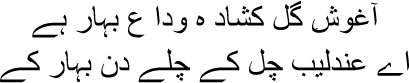
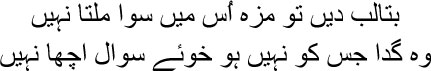

16

The rosebuds have bloomed to say goodbye
Let us leave, nightingale, spring is ending
 ell me, Mirza sahib, have you ever considered how many Ghalibs were hidden within you simultaneously? How many of them did you know? Perhaps you never understood some of them all your life, isn’t that so? Society is troubled by people like you. It cannot fathom who the real Mirza Ghalib is. Take for instance the letter you wrote to Mirza Hatim Ali Saab Mihr. Do you remember what you wrote to him in 1860? Mirza Mihr’s lover had died; he had expressed his grief to you. You replied, I am now sixty-five, I have sized the world up thoroughly in the past fifty years. When I was young a wise man told me, don’t be hard on yourself. Eat, drink and make merry, but remember, you’re the fly that hovers around the sugar-bowl; never stick to the same flower like the bee. Do you remember what else you wrote, Mirza sahib? You wrote, only the person who will not himself die can mourn a death. Why should you weep? Enjoy your independence instead. Forget your grief. And if it’s a relationship that you hanker for, then Chunnajaan is no different from Munnajaan. Sometimes I imagine that I have been taken to paradise, where a nymph has been allotted to me, and I have to live with her till eternity. The thought makes me shiver with fright. Life will become such a burden. The same home in paradise, the same trees all around, and I have to gaze at the same face eternally, whispering words of love to her. Take your heart somewhere else, mian. May new fairies come into your life with every new spring. There is nothing more juvenile than being stuck to the same person all your life. Why did you mock someone else’s pain, Mirza sahib? No, don’t look at me that way. What did you think of yourself? Was everyone your puppet to play with? Now you want to talk about another letter you wrote to Mirza Mihr, don’t you? Yes, I’ve read that letter too. In it you had admitted that you were the indirect cause of Munirabai’s death. When I read that letter, I see a picture before my eyes. A destroyed man—you—gripping Mirza Mihr’s arm to tell him:
ell me, Mirza sahib, have you ever considered how many Ghalibs were hidden within you simultaneously? How many of them did you know? Perhaps you never understood some of them all your life, isn’t that so? Society is troubled by people like you. It cannot fathom who the real Mirza Ghalib is. Take for instance the letter you wrote to Mirza Hatim Ali Saab Mihr. Do you remember what you wrote to him in 1860? Mirza Mihr’s lover had died; he had expressed his grief to you. You replied, I am now sixty-five, I have sized the world up thoroughly in the past fifty years. When I was young a wise man told me, don’t be hard on yourself. Eat, drink and make merry, but remember, you’re the fly that hovers around the sugar-bowl; never stick to the same flower like the bee. Do you remember what else you wrote, Mirza sahib? You wrote, only the person who will not himself die can mourn a death. Why should you weep? Enjoy your independence instead. Forget your grief. And if it’s a relationship that you hanker for, then Chunnajaan is no different from Munnajaan. Sometimes I imagine that I have been taken to paradise, where a nymph has been allotted to me, and I have to live with her till eternity. The thought makes me shiver with fright. Life will become such a burden. The same home in paradise, the same trees all around, and I have to gaze at the same face eternally, whispering words of love to her. Take your heart somewhere else, mian. May new fairies come into your life with every new spring. There is nothing more juvenile than being stuck to the same person all your life. Why did you mock someone else’s pain, Mirza sahib? No, don’t look at me that way. What did you think of yourself? Was everyone your puppet to play with? Now you want to talk about another letter you wrote to Mirza Mihr, don’t you? Yes, I’ve read that letter too. In it you had admitted that you were the indirect cause of Munirabai’s death. When I read that letter, I see a picture before my eyes. A destroyed man—you—gripping Mirza Mihr’s arm to tell him:
‘May Allah release our lost lovers, mian. And may he pity us, who have borne the pain of separation. Munirabai came into my life some forty years ago. I did not tread that path ever again, but even today I cannot forget her eyes, her grace. I will not be able to overcome my grief for her all my life. If the fire of your love from your youth is still alive within you, place it now at God’s feet. Khuda is the last word, all else is a mirage.’
Which of these two letters written around the same time was from the real Mirza Ghalib? Which one was the face, and which the mask, Mirza sahib? I love you, but I cannot accept this duel between the face and the mask. I really am a straightforward person, who is bewildered by your labyrinth. I cannot dismiss you as a devil, yet at times you appear even worse than the devil. You can mock the very person whom you loved a moment ago. Perhaps this is the royal temper. What’s this, why are you going back into your grave? You cannot take what I’m saying, can you? I know, Mirza sahib, you couldn’t accept a single statement against yourself. You were the best after Amir Khusrau, there was no one in between. This was something that you could never forget, could you? I too believe, Mirza sahib, that after Amir Khusrau, no one else but you could have written a sher like this one:

If he gives without being asked, nothing tastes better
The finest beggar is he who does not seek alms
But why did you put on all these masks so often? Whom were you afraid of? Whom did you want to protect yourself from?
— Manto bhai …
— Yes, Mirza sahib?
— You cannot tear me into shreds just because you’re writing a story about me.
— But I want to understand you.
— Do not try. Do you know why I walked out of Mahroof sahib’s house? I was quite happy there. But he used to try to understand me, gauge me, at every step. What right do you have to want to understand me completely?
— But human beings have always wanted to understand one another, Mirza sahib.
— Bakwas bandh kariye. Stop this nonsense. I can’t stand all these homilies. Under the pretext of understanding, what you actually want to do is to trap a person on a chessboard. What do you think you can understand about me? Will you ever be able to enter my dreams and nightmares? Will you understand why I used to talk to myself in my sleep through the night? I’m not talking about pain. I had been insulted so much that I no longer took it seriously. Man derives the greatest pleasure from humiliating another man. Do you know how he does it? When he says, I love you very much. Take this down—I never loved anyone. That is why I humiliated people, why I laughed at them and mocked them. But I said, ‘I love you’ to someone and then threw her into the gutter. I have seen the ways of the world much longer than you have. Can you imagine the same man being the convict as well as the executioner, Manto bhai? That’s me—Mirza Ghalib. Just as the ink might overflow and blot the paper when you write, so too is the book of my destiny inscribed with symbols of the exiled night.
— Mirza sahib …
— What is it?
— I am not dissecting you.
— I squirmed if anyone stared at me too long, Manto bhai. Do you know why? Everyone wanted to seek out the real Mirza Ghalib. But I was nothing but a shadow.
— Whose shadow, Mirza sahib?
— I didn’t see him even once in my entire life. When I listened to the azan at dawn, it seemed he existed, existed somewhere, while I languished in this world merely as his shadow.
— I am his shadow too, Mirza sahib.
— Very well. Now let us hear a story of your love. I hope you have something suitable up your sleeve. You keep talking of some Ismat. Let me lie back and listen.
A curtain of mist trembles, beyond it seems to be my life.
I’ll tell you about Ismat later, my brothers. If I were to admit from my grave today that I loved Ismat—did she not love me too?—the people up there will have a big laugh if they get to hear. Actually both of us evaded the issue, we tried to suppress it; or else our friendship would not have survived. We spoke a lot of love, but I always took the stance that love was just a word that meant nothing. ‘What do you think love is?’ I asked her once.
— I want to hear it from you, Manto bhai.
— Me? Why me? I’ve told you so many times that all this love-shove means nothing to me.
— Don’t be so stubborn all the time.
I laughed at Ismat’s scolding. —All right, let me tell you then. I am fond of my gold zari-embroidered shoes, Rafiq is fond of his fifth wife. That’s love.
— What do you think of yourself, Manto bhai?
— Nothing at all. Haven’t I told you over and over that I’m a fraud?
— That same litany.
— Now you tell me what love is.
— What’s born between a young man and a young woman.
— Oh is that all? Then you could say I had fallen in love too.
— What? Ismat looked at me wide-eyed, as though she could not believe me.
That’s the story I’ll tell all of you, Mirza sahib. The first rainbow of my life. I was twenty-two or twenty-three. After passing the matriculation exam on the third attempt, I was despatched to the Aligarh Muslim University. My friend Syed Quraishi, who failed his exams eternally, was with me too. But I could not adjust to the strict rules and regulations at the university. However, many of the students and teachers there had come to love me. Because I couldn’t adjust, I fell ill. For several years I had chest pains, along with a fever. It got so bad—the pain increased so much—that I had to sit with my knees drawn up to my chest. This posture became my companion for life. I began to drink excessively to overcome the pain. There was no respite except when I drank. I went to Delhi for treatment. X-rays revealed I had tuberculosis, Roohaf. I had to drop out of the university. There was no money for treatment. My sister Iqbal Begum rescued me. She sent me to a hospital in Bataut, paying for all the expenses. Bataut was an extraordinary island in the mountains along the Jammu-Srinagar highway. That was the first and the last time in my life that I saw the finest beauty in the world, my brothers. Just mountains all around, in the distance forests of pine and chinar and majnu that you could reach out and touch, countless snow-capped Himalayan peaks. If I could have spent all my life in a place like this, if I had never felt compelled to write, I would not have had to live through this history of abasement and violence and bloodshed. If only I could have stayed back in the mountain village with Begu!
I’ve forgotten what her real name was. Yes, I think I called her Begu, sometimes Wazir, sometimes Begu. She was from the land of the mountains, her complexion was exactly like a rose’s, and when she blushed her face was like the sun at dawn. Begu was a goatherd. Whenever one of her goats was lost she would bring her hands up to her mouth and call it; the echo of her cry seemed to make the mountains come alive.
This world gets a woman such as this only once. A sharp, long nose. And her eyes? I’ve seldom seen eyes such as hers. They seemed to hold the depths of the mountains in them. Long, thick eyebrows. When she walked past me, a sunbeam seemed to be trapped in her eyelids. Her shoulders were broad, her hands round. And her breasts were like wild mountain fowl. I’m not exaggerating one bit, my brothers, you see beauty such as this only in Pahadi miniature paintings. To describe her loveliness I have no choice but to talk of Radha on a tryst in those works of art. The way she walked the mountain trails, the way she hummed, the way she smiled to herself on the way—she was clearly on her way to meet someone. Of course it was a journey to a tryst.
The first time I saw Begu, it felt like a flash of lightning in the darkness of all these years. For several days I spied on her from my position behind a tree. She would call out to her sheep and goats melodiously, as though she were sending a snatch of a song out on the breeze. Its echoes would burst within me like a waterfall. One day I couldn’t restrain myself anymore. Running up to her, I grasped her hand, and like a terrified doe she put her arms around me. I wanted to kiss her. I even tried to put my arms around her and kiss her. But Begu shook me off and ran away. I never tried to do it again. But one day she came up to me of her own accord and started a conversation. After that we talked for days on end; I do not remember all that we spoke of, my brothers. As you know, alcohol claims the mind first of all, playing tricks with the memory. Things that did not happen appear to be true.
I told Begu of my love for her. She went into peals of laughter. Then, chewing on the edge of her scarf, she said, ‘But you’ll go away from this sarai soon. Will you still love me after that?’
— What sarai?
— This sarai.
— This mountain’s a sarai? An inn? I laughed.
— My grandmother says …
— What does she say?
Begu didn’t continue. I realized that she didn’t have the words for all she wanted to say. But she could feel. I understood Begu much later, Mirza sahib, from a story I heard.
Gustakhi maaf, my brothers, but I must tell this other story now. Otherwise you will not understand that it was indeed in a sarai that we—Begu and I—met.
One day, Ibrahim Ibn Adam was seated in the public stateroom, the Diwan-e-Aam. His ministers and other subjects were present. Suddenly a fakir with a long beard, dressed in a tattered gown, appeared before the emperor’s throne.
— What do you want? Ibrahim asked.
— Let me catch my breath. I’ve only just arrived at your inn.
— Are you mad! Ibrahim said stridently. ‘This isn’t an inn, this is my palace.’
— Whom did this palace belong to before you? The fakir asked.
— To my father.
— And before him?
— To his father.
— And before him?
— It goes back many generations.
— Where are they all now?
— Are they still supposed to be alive? They’re all in their graves.
— If people only come and go, what can this place be but an inn? The fakir disappeared as soon as he said this.
Begu’s grandmother was right. We merely pass a succession of inns as we go forward towards death.
One day Begu said, ‘You won’t remain angry with me, will you?’
— For what?
— The other day …
— What about it?
— I didn’t let you kiss me.
— I’ve forgotten that, Begu.
— Everyone behaves that way with me, you know. They tell me, your eyes are so beautiful; when I see your lips I cannot stop myself from kissing them. What do I do? I don’t like all this. I thought you were like them too.
— Then what am I like?
Begu looked at me, tilting her face against her palm. ‘You’re not like them,’ she smiled. ‘You’re decent.’
One day I found Begu’s kurta pockets stuffed with many things. ‘What’s all this in your pockets?’ I asked.
— Shan’t tell you. Begu smiled, swinging her pigtails.
— Shan’t tell? Just a minute. I grasped her hand. —Show me what you’ve got. You have to.
— Please let me go.
— No, you have to show me.
Looking at me helplessly, Begu fished out one strange object after another from her pockets. Dried chinar leaves, an empty matchbox, a few pebbles, a yellowed photograph clipped from a newspaper, ribbons. But she absolutely refused to show me one of the things she had, holding it tightly in her fist.
— What’s that?
— No, I won’t show you.
— All right. I laughed. —You can go now.
After going off a long way, Begu returned. I was sitting beneath a tree. From a distance, she tossed at me what she had been hiding in her fist, and ran off. Do you know what it was? A lozenge. I was surprised. Why had she refused to show me this lozenge? And why, for that matter, did she come back to give it to me? That was the last time I saw Begu, Mirza sahib. I never saw her again. I bid goodbye to Bataut a few days later. The lozenge stayed in my pocket. When I returned home I put it in the drawer of my desk. My only memory of Begu. But how long do memories last, after all? One day I opened the drawer to discover a swarm of ants having a royal feast with it.
I told Ismat about Begu one day. When she had heard the whole story, she said, ‘What kind of love was this, Manto bhai? I had expected a thrilling love story from you. This is laughable.’
— Why is it laughable?
— A rotten, third-class love story. You returned with a lump of sugar in your pocket and considered yourself a hero. Tchah!
I shut up.
— Well? Say something. Ismat kept prodding me.
— What should I have done, Ismat? What would have pleased you? I should have slept with Begu and given her an illegitimate child, right? That would have made for a thrilling love story, wouldn’t it? I could have flexed my muscles and declared there wasn’t another man in the world like me. Ha! Is this how you want to see me, Ismat?
Ismat took my hand, both her eyes misting over.